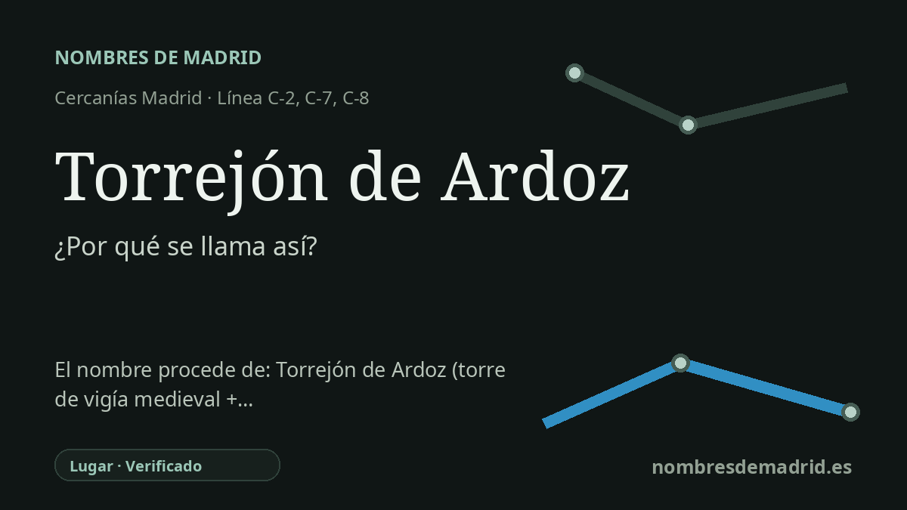

Publicado el · Investigación de Nombres de Madrid · Cómo verificamos cada origen · 5 fuentes consultadas
Respuesta rápida
La estación de Cercanías debe su nombre al municipio de Torrejón de Ardoz. El topónimo alude a una torre o asentamiento defensivo y al arroyo Ardoz, un hidrónimo cuyo origen último sigue siendo incierto.
La historia del nombre
El nombre de la estación de Cercanías es directo: Torrejón de Ardoz es la parada ferroviaria del municipio del mismo nombre, al este de Madrid, en el corredor del Henares. Las fuentes de transporte identifican la estación con ese nombre municipal, de modo que no parece conservar una dedicatoria independiente ni una historia conmemorativa propia de la estación.
El topónimo tiene dos partes. Torrejón pertenece a la amplia familia española de nombres derivados de torre, pero la explicación toponímica más precisa no es simplemente 'torre más sufijo'. Toponomasticon Hispaniae lo describe como una formación diminutiva desarrollada a partir de torreja, vinculada a su vez con el latín turris mediante la forma romance turricula, con un -ón posterior que ya no funciona aquí de manera simple como aumentativo del español actual.
La historiografía local da a ese nombre un marco físico: un asentamiento inicial en torno a una torre defensiva en el paisaje fronterizo relacionado con la conquista castellana de Alcalá y su tierra. La obra municipal Torrejón de Ardoz: una historia viva afirma que no se conoce con certeza la fecha de fundación de la villa, pero sitúa la tradición del torreón en la línea de fortificaciones que separaba dominios cristianos y musulmanes en la frontera del siglo XI. Toponomasticon Hispaniae también relaciona la aldea primitiva con una torre defensiva y con su dependencia inicial de Alcalá.
Ardoz es el nombre de agua que completa el compuesto. El arroyo Ardoz discurría por el término municipal y dio al lugar su segundo elemento diferenciador, de un modo semejante al de muchos topónimos españoles que se precisan por un río o arroyo cercano. A diferencia de Torrejón, sin embargo, Ardoz no tiene una explicación segura: Toponomasticon Hispaniae lo considera un hidrónimo opaco y solo señala posibles paralelos como Arduix y Ardós.
La documentación histórica confirma que el compuesto no es una creación ferroviaria moderna. Toponomasticon Hispaniae cita Torrejón de Hardoz en 1491 y Torrejón de Ardoz en 1528, y la historia municipal recoge que la localidad obtuvo la Carta de Villazgo el 6 de septiembre de 1554. La interpretación mejor apoyada es, por tanto: la estación se llama así por el municipio; el municipio une un nombre medieval relacionado con una torre y el arroyo Ardoz, cuyo origen último sigue sin resolverse.